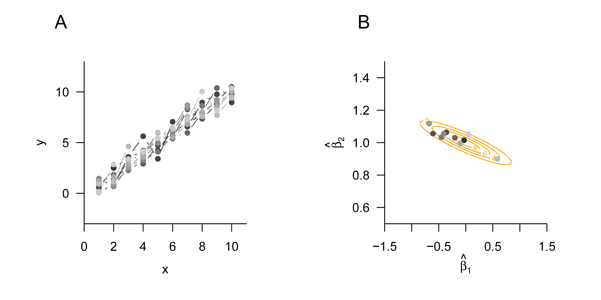

# model formulation
library(MASS) # multivariate normal distribution
n = 12 # number of data points
p = 1 # number of beta parameters
X = matrix(rep(1,n), nrow = n) # design matrix
I_n = diag(n) # n x n identity matrix
beta = 2 # true, but unknown, beta parameter
sigsqr = 1 # true, but unknown, variance parameter
# data realization
y = mvrnorm(1, X %*% beta, sigsqr*I_n) # one realization of an n-dimensional random vector
# parameter estimation
beta_hat = solve(t(X) %*% X) %*% t(X) %*% y # beta-parameter estimator
eps_hat = y - X %*% beta_hat # residual vector
sigsqr_hat = (t(eps_hat) %*% eps_hat) /(n-p) # variance-parameter estimator37 Parameter estimation
In this section, we consider frequentist point estimation of the beta-parameter vector and the variance parameter in the GLM. As example applications, we consider the scenario of \(n\) independent and identically normally distributed random variables and the scenario of simple linear regression. We conclude with the documentation of the frequentist parameter-estimator distributions of the GLM.
37.1 Beta-parameter estimation
We summarize frequentist point estimation of the beta-parameter vector in the following theorem.
Theorem 37.1 (Beta-parameter estimator) Let \[\begin{equation} y = X\beta+\varepsilon \mbox{ with } \varepsilon \sim N\left(0_{n}, \sigma^{2} I_{n}\right) \end{equation}\] be the general linear model, and let \[\begin{equation} \hat{\beta}:=\left(X^{T}X\right)^{-1}X^{T}y . \end{equation}\] Then:
\(\hat{\beta}\) is the least-squares estimator of \(\beta \in \mathbb{R}^{p}\); that is, for an arbitrary fixed value \(y \in \mathbb{R}^n\) of \(y\), \[\begin{equation} \hat{\beta}=\operatorname{argmin}_{\tilde{\beta}}(y - X\tilde{\beta})^{T}(y - X\tilde{\beta}) . \end{equation}\]
\(\hat{\beta}\) is an unbiased maximum-likelihood estimator of \(\beta \in \mathbb{R}^{p}\).
Proof. (1) In a first step, we show that \(\hat{\beta}\) is a least-squares estimator; that is, for an arbitrary fixed value \(y \in \mathbb{R}^n\) of \(y\), \(\hat{\beta}\) minimizes the sum of squared deviations \[\begin{equation} (y-X\tilde{\beta})^{T}(y-X\tilde{\beta})=\sum_{i=1}^{n}\left(y_{i}-(X \tilde{\beta})_{i}\right)^{2} \end{equation}\] (the notation \(\tilde{\beta}\) for the minimization argument is used here only to distinguish it from the true, but unknown, parameter value \(\beta \in \mathbb{R}^{p}\) and has no further meaning). To this end, we first note that \[\begin{equation} \hat{\beta} = \left(X^{T}X\right)^{-1}X^{T}y \Leftrightarrow X^{T}X\hat{\beta} = X^{T}y \Leftrightarrow X^{T}y-X^{T}X\hat{\beta} = 0_{p} \Leftrightarrow X^{T}(y-X\hat{\beta})=0_{p}. \end{equation}\] Furthermore, it also follows that \[\begin{equation} X^{T}(y-X\hat{\beta})=0_{p} \Leftrightarrow \left(X^{T}(y-X\hat{\beta})\right)^{T}=0_{p}^{T} \Leftrightarrow (y-X\hat{\beta})^{T} X=0_{p}^{T}. \end{equation}\] We also note without proof that, for every matrix \(X \in \mathbb{R}^{n \times p}\), \[\begin{equation} z^{T}X^{T}Xz \geq 0 \mbox{ for all } z \in \mathbb{R}^{p}. \end{equation}\] For fixed \(y\) and arbitrary \(\tilde{\beta}\), we now consider the sum of squared deviations \[\begin{equation} (y-X\tilde{\beta})^{T}(y-X\tilde{\beta}). \end{equation}\] This gives \[\begin{equation} \begin{aligned} & (y-X\tilde{\beta})^{T}(y-X\tilde{\beta}) \\ & =(y-X\hat{\beta}+X\hat{\beta}- X\tilde{\beta})^{T}(y-X\hat{\beta}+X\hat{\beta}- X\tilde{\beta}) \\ & =((y-X\hat{\beta})+X(\hat{\beta}-\tilde{\beta}))^{T}((y-X\hat{\beta})+X(\hat{\beta}-\tilde{\beta})) \\ & =(y-X\hat{\beta})^{T}(y-X\hat{\beta})+(y-X\hat{\beta})^{T} X(\hat{\beta}-\tilde{\beta})+(\hat{\beta}-\tilde{\beta})^{T} X^{T}(y-X\hat{\beta})+(\hat{\beta}-\tilde{\beta})^{T} X^{T}X(\hat{\beta}-\tilde{\beta}) \\ & =(y-X\hat{\beta})^{T}(y-X\hat{\beta})+0_{p}^{T}(\hat{\beta}-\tilde{\beta})+(\hat{\beta}-\tilde{\beta})^{T} 0_{p}+(\hat{\beta}-\tilde{\beta})^{T} X^{T}X(\hat{\beta}-\tilde{\beta}) \\ & =(y-X\hat{\beta})^{T}(y-X\hat{\beta})+(\hat{\beta}-\tilde{\beta})^{T} X^{T}X(\hat{\beta}-\tilde{\beta}). \end{aligned} \end{equation}\] On the right-hand side of the above equation, only the second term depends on \(\tilde{\beta}\). Since this term satisfies \[\begin{equation} (\hat{\beta}-\tilde{\beta})^{T} X^{T}X(\hat{\beta}-\tilde{\beta}) \geq 0, \end{equation}\] it attains its minimum value 0 exactly when \[\begin{equation} (\hat{\beta}-\tilde{\beta})=0_{p} \Leftrightarrow \tilde{\beta}=\hat{\beta}. \end{equation}\] Thus, \[\begin{equation} \hat{\beta}=\operatorname{argmin}_{\tilde{\beta}}(y-X\tilde{\beta})^{T}(y-X\tilde{\beta}) . \end{equation}\] (2) To show that \(\hat{\beta}\) is a maximum-likelihood estimator, we consider, for an arbitrary value \(y \in \mathbb{R}^{n}\) of \(y\) and fixed \(\sigma^{2}>0\), the log-likelihood function \[\begin{equation} \ell: \mathbb{R}^{p} \rightarrow \mathbb{R}, \tilde{\beta} \mapsto \ln p_{\tilde{\beta}}(y)=\ln N\left(y ; X \tilde{\beta}, \sigma^{2} I_{n}\right), \end{equation}\] where \[\begin{equation} \begin{aligned} \ln N\left(y ; X \tilde{\beta}, \sigma^{2} I_{n}\right) & =\ln \left((2 \pi)^{-\frac{n}{2}}\left|\sigma^{2} I_{n}\right|^{-\frac{1}{2}} \exp \left(-\frac{1}{2 \sigma^{2}}(y-X\tilde{\beta})^{T}(y-X\tilde{\beta})\right)\right) \\ & =-\frac{n}{2} \ln 2 \pi-\frac{1}{2} \ln \left|\sigma^{2} I_{n}\right|-\frac{1}{2 \sigma^{2}}(y-X\tilde{\beta})^{T}(y-X\tilde{\beta}). \end{aligned} \end{equation}\] Only the term \(-\frac{1}{2 \sigma^{2}}(y-X\tilde{\beta})^{T}(y-X\tilde{\beta})\) depends on \(\tilde{\beta}\). Because \((y-X\tilde{\beta})^{T}(y-X\tilde{\beta}) \geq 0\), this term is maximized, due to the negative sign, when \((y-X\tilde{\beta})^{T}(y-X\tilde{\beta})\) is minimized. As shown above, this is exactly the case for \(\tilde{\beta}=\hat{\beta}\). Finally, the unbiasedness of \(\hat{\beta}\) follows from \[\begin{equation} \mathbb{E}(\hat{\beta}) = \mathbb{E}\left(\left(X^{T}X\right)^{-1}X^{T}y\right) = \left(X^{T}X\right)^{-1}X^{T} \mathbb{E}(y) = \left(X^{T}X\right)^{-1}X^{T}X \beta = \beta . \end{equation}\]
With \[\begin{equation} \hat{\beta}=\left(X^{T}X\right)^{-1}X^{T}y, \end{equation}\] Theorem 37.1 provides a formula for concretely estimating \(\beta\) based on the design matrix and a realization \(y \in \mathbb{R}^{n}\) of \(y\). As a random vector, \(\hat{\beta}\) is an unbiased estimator of \(\beta\), and as a maximum-likelihood estimator it is, in particular, also consistent, asymptotically normally distributed, and asymptotically efficient. We will see later that \(\hat{\beta}\) is even normally distributed. In addition to these properties, \(\hat{\beta}\) has further good properties. For example, \(\hat{\beta}\) has the smallest variance in the class of linear unbiased estimators of \(\beta\). This property is the core statement of the Gauss-Markov theorem, which we do not discuss in detail here.
Using the beta-parameter estimator, we can define the concepts of explained data, the residual vector, and residuals, which we will need in many places.
Definition 37.1 (Explained data, residual vector, and residuals) Let \[\begin{equation} y = X\beta+\varepsilon \operatorname{with} \varepsilon \sim N\left(0_{n}, \sigma^{2} I_{n}\right) \end{equation}\] be the general linear model, and let \[\begin{equation} \hat{\beta}:=\left(X^{T}X\right)^{-1}X^{T}y \end{equation}\] be the beta-parameter estimator. Then the random vector \[\begin{equation} \hat{y}:=X\hat{\beta}=X\left(X^{T}X\right)^{-1}X^{T}y \end{equation}\] is called the explained data, the random vector \[\begin{equation} \hat{\varepsilon}:=y-\hat{y}=y-X\hat{\beta} \end{equation}\] is called the residual vector, and, for \(i=1, \ldots, n\), the components of this random vector \[\begin{equation} \hat{\varepsilon}_{i}:=y_{i}-\hat{y}_{i}=y_{i}-(X\hat{\beta})_{i} \end{equation}\] are called the residuals.
37.2 Variance-parameter estimation
We summarize frequentist point estimation of the variance parameter in the following theorem, which we do not prove here.
Theorem 37.2 (Variance-parameter estimator) Let \[\begin{equation} y = X\beta+\varepsilon \mbox{ with } \varepsilon \sim N\left(0_{n}, \sigma^{2} I_{n}\right) \end{equation}\] be the general linear model. Then \[\begin{equation} \hat{\sigma}^{2}:=\frac{\hat{\varepsilon}^{T} \hat{\varepsilon}}{n-p} \end{equation}\] is an unbiased estimator of \(\sigma^{2}>0\).
With \[\begin{equation} \hat{\sigma}^{2} = \frac{(y - X\hat{\beta})^{T}(y - X\hat{\beta})}{n-p}, \end{equation}\] Theorem 37.2 provides a formula for estimating \(\sigma^{2}\) based on the design matrix, the beta-parameter estimator, and a realization \(y \in \mathbb{R}^n\) of \(y\). Evidently, by Theorem 37.2, \[\begin{equation} \hat{\sigma}^{2}=\frac{1}{n-p} \sum_{i=1}^{n}\left(y_{i}-(X\hat{\beta})_{i}\right)^{2}. \end{equation}\] Thus \(\hat{\sigma}^{2}\) is estimated by the sum of squared residuals, that is, by a sum of squared deviations. For a proof of Theorem 37.2, we refer, for example, to Searle (1971), Searle & Gruber (2017), or Rencher & Schaalje (2008). From a probabilistic perspective, \(\hat{\sigma}^{2}\) is not a maximum-likelihood estimator, but a restricted maximum-likelihood estimator of \(\sigma^{2}\) (cf. Harville (1977), Foulley (1993), Starke & Ostwald (2017)). From a geometric perspective, \(\hat{\sigma}^{2}\) is a least-squares estimator (cf. Christensen (2011)).
37.3 Independent identically normally distributed random variables
As a first application of Theorem 37.1 and Theorem 37.2, we analyze the scenario of \(n\) independent and identically normally distributed random variables with expectation parameter \(\mu \in \mathbb{R}\) and variance parameter \(\sigma^{2}\), \[\begin{equation} y_{i} \sim N\left(\mu, \sigma^{2}\right) \mbox{ for } i=1, \ldots, n. \end{equation}\] Writing this model in its design-matrix form (cf. Equation 36.2), we have, as shown below, \[ \hat{\beta} = \frac{1}{n} \sum_{i=1}^{n} y_{i} =: \bar{y} \mbox{ and } \hat{\sigma}^{2} = \frac{1}{n-1} \sum_{i=1}^{n}\left(y_{i}-\bar{y}\right)^{2} =: s_{y}^{2}. \tag{37.1}\] In this case, the beta-parameter estimator is therefore identical to the sample mean \(\bar{y}\) of the \(y_{1}, \ldots, y_{n}\), and the variance-parameter estimator is identical to the sample variance \(s_{y}^{2}\) of the \(y_{1}, \ldots, y_{n}\).
Equation 37.1 follows as follows. On the one hand, \[\begin{equation} \begin{aligned} \hat{\beta} & = \left(X^{T}X\right)^{-1}X^{T}y \\ & = \left(1_{n}^{T} 1_{n}\right)^{-1} 1_{n}^{T} y \\ & = \begin{pmatrix} 1 & \cdots & 1 \end{pmatrix} \begin{pmatrix} 1 \\ \vdots \\ 1 \end{pmatrix}^{-1} \begin{pmatrix} 1 & \cdots & 1 \end{pmatrix} \begin{pmatrix} y_{1} \\ \vdots \\ y_{n} \end{pmatrix} \\ & = n^{-1} \sum_{i=1}^{n} y_{i} \\ & =\frac{1}{n} \sum_{i=1}^{n} y_{i} \\ & =: \bar{y}. \end{aligned} \end{equation}\] On the other hand, \[\begin{equation} \begin{aligned} \hat{\sigma}^{2} & = \frac{1}{n-1}(y-X\hat{\beta})^{T}(y-X\hat{\beta}) \\ & = \frac{1}{n-1}\left(y-1_{n} \bar{y}\right)^{T}\left(y-1_{n} \bar{y}\right) \\ & = \frac{1}{n-1} \left( \begin{pmatrix} y_{1} \\ \vdots \\ y_{n} \end{pmatrix} - \begin{pmatrix} 1 \\ \vdots \\ 1 \end{pmatrix} \bar{y} \right)^{T} \left( \begin{pmatrix} y_{1} \\ \vdots \\ y_{n} \end{pmatrix} -\begin{pmatrix} 1 \\ \vdots \\ 1 \end{pmatrix} \bar{y} \right) \\ & = \frac{1}{n-1} \begin{pmatrix} y_{1} - \bar{y} & \cdots & y_{n}-\bar{y}\end{pmatrix} \begin{pmatrix} y_{1}-\bar{y} \\ \vdots \\ y_{n}-\bar{y} \end{pmatrix} \\ & =\frac{1}{n-1} \sum_{i=1}^{n}\left(y_{i}-\bar{y}\right)^{2} \\ & =s_{y}^{2}. \end{aligned} \end{equation}\] We demonstrate parameter estimation in this scenario in the following R code.
beta : 2
hat{beta} : 2.051848
sigsqr : 1
hat{sigsqr}: 0.824325The following R code simulates the frequentist meaning of estimator unbiasedness in this scenario.
# model formulation
library(MASS) # multivariate normal distribution
n = 12 # number of data points
p = 1 # number of beta parameters
X = matrix(rep(1,n), nrow = n) # design matrix
I_n = diag(n) # n x n identity matrix
beta = 2 # true, but unknown, beta parameter
sigsqr = 1 # true, but unknown, variance parameter
# frequentist simulation
nsim = 1e4 # number of data realizations
beta_hat = rep(NaN,nsim) # \hat{\beta} realization array
sigsqr_hat = rep(NaN,nsim) # \hat{sigsqr} realization array
for(i in 1:nsim){ # simulation iterations
y = mvrnorm(1, X %*% beta, sigsqr*I_n) # data realization
beta_hat[i] = solve(t(X) %*% X) %*% t(X) %*% y # beta-parameter estimator
eps_hat = y - X %*% beta_hat[i] # residual vector
sigsqr_hat[i] = (t(eps_hat) %*% eps_hat) /(n-p) # variance-parameter estimator
}True, but unknown, beta parameter : 2
Estimated expectation of the beta-parameter estimator : 1.999992
True, but unknown, variance parameter : 1
Estimated expectation of the variance-parameter estimator : 1.00320537.4 Simple linear regression
As a second application of Theorem 37.1 and Theorem 37.2, we analyze the scenario of simple linear regression
\[\begin{equation} y_{i}=\beta_{0}+\beta_{1} x_{i}+\varepsilon_{i} \mbox{ with } \varepsilon_{i} \sim N\left(0, \sigma^{2}\right) \mbox{ for } i=1, \ldots, n. \end{equation}\] Based on the design-matrix form Equation 36.3 of this model, we obtain, as shown below, \[ \hat{\beta} =\begin{pmatrix} \hat{\beta}_{0} \\ \hat{\beta}_{1} \end{pmatrix} =\begin{pmatrix} \bar{y}-\frac{c_{x y}}{s_{x}^{2}} \bar{x} \\ \frac{c_{x y}}{s_{x}^{2}} \end{pmatrix} \mbox{ and } \hat{\sigma}^{2} = \frac{1}{n-2}\sum_{i=1}^{n}\left(y_{i}-\left(\hat{\beta}_{0}+\hat{\beta}_{1} x_{i}\right)\right)^{2} \tag{37.2}\]
where \(\bar{x}\) and \(\bar{y}\) denote the sample means of the \(x_{1}, \ldots, x_{n}\) and \(y_{1}, \ldots, y_{n}\), \(c_{x y}\) denotes the sample covariance of the \(x_{1}, \ldots, x_{n}\) and \(y_{1}, \ldots, y_{n}\), and \(s_{x}^{2}\) denotes the sample variance of the \(x_{1}, \ldots, x_{n}\). As in Chapter 1, the terms sample covariance and sample variance with respect to the \(x_{1}, \ldots, x_{n}\) are meant here only formally, because no assumption is made that the \(x_{1}, \ldots, x_{n}\) are realizations of random variables.
We therefore note that, for a parametric design-matrix column, the corresponding beta-parameter estimator is obtained from the sample covariance of the respective column with the data divided by the sample variance of the corresponding column, and thus corresponds to a standardized sample covariance. A comparison with the parameters of the fitting line in Chapter 34 further shows the identity of the beta-parameter-estimator components \(\hat{\beta}_{0}\) and \(\hat{\beta}_{1}\) with the parameters derived there under the criterion of minimizing squared vertical deviations. This is not surprising, because both \(\hat{\beta}\) and the parameters of the fitting line, for a fixed value \(y \in \mathbb{R}^n\) of \(y\), minimize the value \[\begin{equation} q(\tilde{\beta}) =\sum_{i=1}^{n}\left(y_{i}-\left(\tilde{\beta}_{0}+\tilde{\beta}_{1} x_{i}\right)\right)^{2}=(y- X\tilde{\beta})^{T}(y- X\tilde{\beta}) \end{equation}\] with respect to \(\tilde{\beta}\).
To derive the form of the beta-parameter estimator in Equation 37.2, we first note that \[\begin{equation} \begin{aligned} \sum_{i=1}^{n}\left(x_{i}-\bar{x}\right)\left(y_{i}-\bar{y}\right) & =\sum_{i=1}^{n}\left(x_{i} y_{i}-x_{i} \bar{y}-\bar{x} y_{i}+\bar{x} \bar{y}\right) \\ & =\sum_{i=1}^{n} x_{i} y_{i}-\sum_{i=1}^{n} x_{i} \bar{y}-\sum_{i=1}^{n} \bar{x} y_{i}+\sum_{i=1}^{n} \bar{x} \bar{y} \\ & =\sum_{i=1}^{n} x_{i} y_{i}-\bar{y} \sum_{i=1}^{n} x_{i}-\bar{x} \sum_{i=1}^{n} y_{i}+n \bar{x} \bar{y} \\ & =\sum_{i=1}^{n} x_{i} y_{i}-\bar{y} n \bar{x}-\bar{x} n \bar{y}+n \bar{x} \bar{y} \\ & =\sum_{i=1}^{n} x_{i} y_{i}-n \bar{x} \bar{y}-n \bar{x} \bar{y}+n \bar{x} \bar{y} \\ & =\sum_{i=1}^{n} x_{i} y_{i}-n \bar{x} \bar{y}. \end{aligned} \end{equation}\] Furthermore, we note that \[\begin{equation} \begin{aligned} \sum_{i=1}^{n}\left(x_{i}-\bar{x}\right)^{2} & =\sum_{i=1}^{n}\left(x_{i}^{2}-2 x_{i} \bar{x}+\bar{x}^{2}\right) \\ & =\sum_{i=1}^{n} x_{i}^{2}-\sum_{i=1}^{n} 2 x_{i} \bar{x}+\sum_{i=1}^{n} \bar{x}^{2} \\ & =\sum_{i=1}^{n} x_{i}^{2}-2 \bar{x} \sum_{i=1}^{n} x_{i}+n \bar{x}^{2} \\ & =\sum_{i=1}^{n} x_{i}^{2}-2 \bar{x} n \bar{x}+n \bar{x}^{2} \\ & =\sum_{i=1}^{n} x_{i}^{2}-2 n \bar{x}^{2}+n \bar{x}^{2} \\ & =\sum_{i=1}^{n} x_{i}^{2}-n \bar{x}^{2}. \end{aligned} \end{equation}\] From the definition of \(\hat{\beta}\), we obtain \[\begin{equation} \begin{aligned} \hat{\beta} & =\left(X^{T}X\right)^{-1}X^{T}y \\ & =\left( \begin{pmatrix} 1 & \cdots & 1 \\ x_{1} & \cdots & x_{n} \end{pmatrix} \begin{pmatrix} 1 & x_{1} \\ \vdots & \vdots \\ 1 & x_{n} \end{pmatrix} \right)^{-1} \begin{pmatrix} 1 & \cdots & 1 \\ x_{1} & \cdots & x_{n} \end{pmatrix} \begin{pmatrix} y_{1} \\ \vdots \\ y_{n} \end{pmatrix} \\ & =\begin{pmatrix} n & \sum_{i=1}^{n} x_{i} \\ \sum_{i=1}^{n} x_{i} & \sum_{i=1}^{n} x_{i}^{2} \end{pmatrix}^{-1}\begin{pmatrix} \sum_{i=1}^{n} y_{i} \\ \sum_{i=1}^{n} x_{i} y_{i} \end{pmatrix} \\ & = \begin{pmatrix} n & n \bar{x} \\ n \bar{x} & \sum_{i=1}^{n} x_{i}^{2} \end{pmatrix}^{-1} \begin{pmatrix} n \bar{y} \\ \sum_{i=1}^{n} x_{i} y_{i} \end{pmatrix}. \end{aligned} \end{equation}\] The inverse of \(X^{T}X\) is given by \[\begin{equation} \frac{1}{s_{x x}}\begin{pmatrix} \frac{s_{x x}}{n}+\bar{x}^{2} & -\bar{x} \\ -\bar{x} & 1 \end{pmatrix}, \end{equation}\] where \(s_{x x}:=\sum_{i=1}^{n}\left(x_i-\bar{x}\right)^2\), because \[\begin{equation} \begin{aligned} & \frac{1}{s_{x x}}\begin{pmatrix} \frac{s_{x x}}{n}+\bar{x}^{2} & -\bar{x} \\ -\bar{x} & 1 \end{pmatrix}\begin{pmatrix} n & n \bar{x} \\ n \bar{x} & \sum_{i=1}^{n} x_{i}^{2} \end{pmatrix} \\ & =\frac{1}{s_{x x}}\begin{pmatrix} \frac{n s_{x x}}{n}+n \bar{x}^{2}-n \bar{x}^{2} & \frac{s_{x x} n \bar{x}}{n}+n \bar{x}^{2} \bar{x}-\bar{x} \sum_{i=1}^{n} x_{i}^{2} \\ -\bar{x} n+n \bar{x} & -n \bar{x}^{2}+\sum_{i=1}^{n} x_{i}^{2} \end{pmatrix} \\ & =\frac{1}{s_{x x}}\begin{pmatrix} s_{x x} & s_{x x} \bar{x}-\bar{x}\left(\sum_{i=1}^{n} x_{i}^{2}-n \bar{x}^{2}\right) \\ 0 & \sum_{i=1}^{n} x_{i}^{2}-n \bar{x}^{2} \end{pmatrix} \\ & =\frac{1}{s_{x x}}\begin{pmatrix} s_{x x} & s_{x x} \bar{x}-\bar{x} s_{x x} \\ 0 & s_{x x} \end{pmatrix} \\ & =\frac{1}{s_{x x}}\begin{pmatrix} s_{x x} & 0 \\ 0 & s_{x x} \end{pmatrix} \\ & =\begin{pmatrix} 1 & 0 \\ 0 & 1 \end{pmatrix}. \end{aligned} \end{equation}\] Thus, \[\begin{equation} \begin{aligned} \hat{\beta}=\begin{pmatrix} \frac{1}{n}+\frac{\bar{x}^{2}}{s_{x x}} & -\frac{\bar{x}}{s_{x x}} \\ -\frac{\bar{x}}{s_{x x}} & \frac{1}{s_{x x}} \end{pmatrix}\begin{pmatrix} n \bar{y} \\ \sum_{i=1}^{n} x_{i} y_{i} \end{pmatrix} & =\begin{pmatrix} \left(\frac{1}{n}+\frac{\bar{x}^{2}}{s_{x x}}\right) n \bar{y}-\frac{\bar{x} \sum_{i=1}^{n} x_{i} y_{i}}{s_{x x}} \\ \frac{\sum_{i=1}^{n} x_{i} y_{i}}{s_{x x}}-\frac{n \bar{x} \bar{y}}{s_{x x}} \end{pmatrix} \\ & =\begin{pmatrix} \frac{n \bar{y}}{n}+\frac{\bar{x}^{2} n \bar{y}}{s_{x x}}-\frac{\bar{x} \sum_{i=1}^{n} x_{i} y_{i}}{s_{x x}} \\ \frac{\sum_{i=1}^{n} x_{i} y_{i}-n \bar{x} \bar{y}}{s_{x x}} \end{pmatrix} \\ & =\begin{pmatrix} \bar{y}+\frac{\bar{x} n \bar{x} \bar{y}-\bar{x} \sum_{i=1}^{n} x_{i} y_{i}}{s_{x x}} \\ \frac{\sum_{i=1}^{n} x_{i} y_{i}-n \bar{x} \bar{y}}{s_{x x}} \end{pmatrix} \\ & =\begin{pmatrix} \bar{y}-\frac{\sum_{i=1}^{n} x_{i} y_{i}-n \bar{x} \bar{y}}{s_{x x}} \bar{x} \\ \frac{\sum_{i=1}^{n} x_{i} y_{i}-n \bar{x} \bar{y}}{s_{x x}} \end{pmatrix} \\ & =\begin{pmatrix} \bar{y}-\frac{c_{x y}}{s_{x}^{2}} \bar{x} \\ \frac{c_{x y}}{s_{x}^{2}} \end{pmatrix}. \end{aligned} \end{equation}\]
We demonstrate parameter estimation in this scenario in the following R code. Note the extensive agreement with the implementation of parameter estimation in the scenario of independent and identically normally distributed random variables; only the design matrix and the dimension of the beta parameter change.
# model formulation
library(MASS) # multivariate normal distribution
n = 10 # number of data points
p = 2 # number of beta parameters
x = 1:n # predictor values
X = matrix(c(rep(1,n),x), nrow = n) # design matrix
I_n = diag(n) # n x n identity matrix
beta = matrix(c(0,1), nrow = p) # true, but unknown, beta parameter
sigsqr = 1 # true, but unknown, variance parameter
# data realization
y = mvrnorm(1, X %*% beta, sigsqr*I_n) # one realization of an n-dimensional random vector
# parameter estimation
beta_hat = solve(t(X) %*% X) %*% t(X) %*% y # beta-parameter estimator
eps_hat = y - X %*% beta_hat # residual vector
sigsqr_hat = (t(eps_hat) %*% eps_hat) /(n-p) # variance-parameter estimatorbeta : 0 1
hat{beta} : -0.03717137 1.0794
sigsqr : 1
hat{sigsqr}: 0.5493908Analogously to the scenario of independent and identically normally distributed random variables, the frequentist meaning of estimator unbiasedness can also be simulated here.
# model formulation
library(MASS) # multivariate normal distribution
n = 10 # number of data points
p = 2 # number of beta parameters
x = 1:n # predictor values
X = matrix(c(rep(1,n),x), nrow = n) # design matrix
I_n = diag(n) # n x n identity matrix
beta = matrix(c(0,1), nrow = p) # true, but unknown, beta parameter
sigsqr = 1 # true, but unknown, variance parameter
# frequentist simulation
nsim = 1e4 # number of realizations of the n-dimensional random vector
beta_hat = matrix(rep(NaN,p*nsim), nrow = p) # \hat{\beta} realization array
sigsqr_hat = rep(NaN,nsim) # \hat{sigsqr} realization array
for(i in 1:nsim){ # simulation iterations
y = mvrnorm(1, X %*% beta, sigsqr*I_n) # data realization
beta_hat[,i] = solve(t(X) %*% X) %*% t(X) %*% y # beta-parameter estimator
eps_hat = y - X %*% beta_hat[,i] # residual vector
sigsqr_hat[i] = (t(eps_hat) %*% eps_hat) /(n-p) # variance-parameter estimator
}True, but unknown, beta parameter : 0 1
Estimated expectation of the beta-parameter estimator : -0.0009772803 1.000199
True, but unknown, variance parameter : 1
Estimated expectation of the variance-parameter estimator : 0.99906137.5 Frequentist estimator distributions
We document the frequentist distribution of the beta-parameter estimator in the following theorem.
Theorem 37.3 (Frequentist distribution of the beta-parameter estimator) Let \[\begin{equation} y = X\beta+\varepsilon \mbox{ with } \varepsilon \sim N\left(0_{n}, \sigma^{2} I_{n}\right) \end{equation}\] be the GLM. Furthermore, let \[\begin{equation} \hat{\beta}:=\left(X^{T}X\right)^{-1}X^{T}y \end{equation}\] be the beta-parameter estimator. Then \[\begin{equation} \hat{\beta} \sim N\left(\beta, \sigma^{2}\left(X^{T}X\right)^{-1}\right) . \end{equation}\]
Proof. The theorem follows directly from the theorem on linear transformations of multivariate normal distributions. Specifically, here \[\begin{equation} \hat{\beta} \sim N\left(\left(X^{T}X\right)^{-1}X^{T}X \beta,\left(X^{T}X\right)^{-1}X^{T}\left(\sigma^{2} I_{n}\right)\left(\left(X^{T}X\right)^{-1}X^{T}\right)^{T}\right) . \end{equation}\] The expectation parameter then simplifies to \[\begin{equation} \left(X^{T}X\right)^{-1}X^{T}X \beta=\beta. \end{equation}\] The covariance-matrix parameter simplifies as follows: \[\begin{equation} \begin{aligned} \left(X^{T}X\right)^{-1}X^{T}\left(\sigma^{2} I_{n}\right)\left(\left(X^{T}X\right)^{-1}X^{T}\right)^{T} & =\left(X^{T}X\right)^{-1}X^{T}\left(\sigma^{2} I_{n}\right) X\left(X^{T}X\right)^{-1} \\ & =\sigma^{2}\left(X^{T}X\right)^{-1}X^{T}X\left(X^{T}X\right)^{-1} \\ & =\sigma^{2}\left(X^{T}X\right)^{-1}. \end{aligned} \end{equation}\] Here, the first equality follows from the fact that both \(X^{T}X\) and its inverse \(\left(X^{T}X\right)^{-1}\) are symmetric matrices. Thus, it follows immediately that \[\begin{equation} \hat{\beta} \sim N\left(\beta, \sigma^{2}\left(X^{T}X\right)^{-1}\right) . \end{equation}\]
With Theorem 6.3, it follows in particular for the expectation and covariance matrix of the beta-parameter estimator that \[\begin{equation} \mathbb{E}(\widehat{\beta})=\beta \mbox{ and } \mathbb{C}(\hat{\beta})=\sigma^{2}\left(X^{T}X\right)^{-1}. \end{equation}\]
As diagonal elements of \(\mathbb{C}(\hat{\beta})\), the variances of the beta-parameter-estimator components therefore depend both on the variance parameter of the error variables and on the design matrix. In particular, for fixed, true, but unknown \(\sigma^{2}>0\), the design matrix can therefore be chosen such that the variance of the beta-parameter-estimator components is minimized.
We document the frequentist distribution of the variance-parameter estimator in the following theorem, which we do not prove here.
Theorem 37.4 (Frequentist distribution of the variance-parameter estimator) Let \[\begin{equation} y = X\beta+\varepsilon \mbox{ with } \varepsilon \sim N\left(0_{n}, \sigma^{2} I_{n}\right) \end{equation}\] be the GLM. Furthermore, let \[\begin{equation} \hat{\sigma}^{2}=\frac{\hat{\varepsilon}^{T} \hat{\varepsilon}}{n-p} \end{equation}\] be the variance-parameter estimator. Then \[\begin{equation} \frac{n-p}{\sigma^{2}} \hat{\sigma}^{2} \sim \chi^{2}(n-p) . \end{equation}\]
Because \((n-p) \hat{\sigma}^{2}\) is a sum of normally distributed random variables, the \(\chi^{2}\) distribution is at least plausible in light of the \(\chi^{2}\) transformation for normally distributed random variables. However, \(\hat{\sigma}^{2}\) itself is not \(\chi^{2}\) distributed, but only its version scaled by multiplication with \(\frac{n-p}{\sigma^{2}}\). We want to illustrate the frequentist estimator distributions from Theorem 37.3 and Theorem 37.4 using the two standard examples.
Example (1) Independent and identically normally distributed random variables
Let \[\begin{equation} y \sim N\left(X \beta, \sigma^{2} I_{n}\right) \mbox{ with } X:=1_{n} \in \mathbb{R}^{n \times 1}, \beta:=\mu \in \mathbb{R} \mbox{ and } \sigma^{2}>0 \end{equation}\] be the GLM scenario of independent and identically normally distributed random variables with known variance. We have already seen that, in this case, \(\hat{\beta}\) is identical to the sample mean \(\bar{y}\). Theorem 37.3 then implies, with \[\begin{equation} \left(X^{T}X\right)^{-1}=\left(1_{n}^{T} 1_{n}\right)^{-1}=\frac{1}{n}, \end{equation}\] that \[\begin{equation} \bar{y} \sim N\left(\mu, \frac{\sigma^{2}}{n}\right). \end{equation}\] The sample mean of \(n\) independent and identically normally distributed random variables with expectation parameter \(\mu\) and variance parameter \(\sigma^{2}\) is therefore normally distributed with expectation parameter \(\mu\) and variance parameter \(\sigma^{2} / n\). We have already seen this fact in the context of transformations of normal distributions under the term mean transformation.
Example (2) Simple linear regression
Let \[\begin{equation} y \sim N\left(X \beta, \sigma^{2} I_{n}\right) \mbox{ with }\begin{pmatrix} 1 & x_{1} \\ \vdots & \vdots \\ 1 & x_{n} \end{pmatrix} \in \mathbb{R}^{n \times 2}, \beta \in \mathbb{R}^{2} \mbox{ and } \sigma^{2}>0 \end{equation}\] be the scenario of simple linear regression. We have already seen that \[\begin{equation} \sigma^{2}\left(X^{T}X\right)^{-1}=\frac{\sigma^{2}}{s_{x x}} \begin{pmatrix} \frac{s_{x x}}{n}+\bar{x}^{2} & -\bar{x} \\ -\bar{x} & 1 \end{pmatrix} \mbox{ with } s_{x x}:=\sum_{i=1}^{n}\left(x_{i}-\bar{x}\right)^{2}. \end{equation}\]
The variance of the intercept-parameter estimator thus depends both on the sum of squared differences of the values of the independent variable from their sample mean and on the sample mean of the values of the independent variable itself. The variance of the slope-parameter estimator, by contrast, depends only on the sum of squared differences of the independent variable from its sample mean. Finally, the covariance of intercept- and slope-parameter estimators depends on the mean of the values of the independent variable. The following R code simulates the frequentist distributions of beta- and variance-parameter estimators in the scenario of simple linear regression.
# model formulation
library(MASS) # multivariate normal distribution
n = 10 # number of data points
p = 2 # number of beta parameters
x = 1:n # predictor values
X = matrix(c(rep(1,n),x), nrow = n) # design matrix
I_n = diag(n) # n x n identity matrix
beta = matrix(c(0,1), nrow = p) # true, but unknown, beta parameter
sigsqr = .5 # true, but unknown, variance parameter
# frequentist simulation
nsim = 10 # number of realizations of the n-dimensional random vector
y = matrix(rep(NaN,n*nsim), nrow = n) # y realization array
beta_hat = matrix(rep(NaN,p*nsim), nrow = p) # \hat{\beta} realization array
for(i in 1:nsim){
y[,i] = mvrnorm(1, X %*% beta, sigsqr*I_n) # one realization of an n-dimensional random vector
beta_hat[,i] = solve(t(X) %*% X) %*% t(X) %*% y[,i] # \hat{\beta} = (X^T X)^{-1}X^Ty
}
Figure 37.1 shows 10 realizations of the model of simple linear regression, and Figure 37.1 B shows the corresponding beta-parameter-estimator realizations as well as the analytical distribution of the beta-parameter estimator.
37.6 Bibliographic remarks
Plackett (1949) gives a historical overview of the development of beta-parameter estimation and, in particular, of the Gauss-Markov theorem. The problem of variance-parameter estimation in the GLM in the sense of the restricted-maximum-likelihood method first appears in Patterson & Thompson (1971) (cf. Harville (1977)), Verbyla (1990), and remains, in generalized GLMs, a topic of current research (cf. Lindholm & Wahl (2020)).
Christensen, R. (2011). Plane Answers to Complex Questions. Springer New York. https://doi.org/10.1007/978-1-4419-9816-3
Foulley, J. (1993). A simple argument showing how to derive restricted maximum likelihood.
Harville, D. A. (1977). Maximum Likelihood Approaches to Variance Component Estimation and to Related Problems. Journal of the American Statistical Association, 72(358), 320. https://doi.org/10.2307/2286796
Lindholm, M., & Wahl, F. (2020). On the variance parameter estimator in general linear models. Metrika, 83(2), 243–254. https://doi.org/10.1007/s00184-019-00751-4
Patterson, H. D., & Thompson, R. (1971). Recovery of inter-block information when block sizes are unequal. Biometrika, 58(3), 545–554. https://doi.org/10.1093/biomet/58.3.545
Plackett, R. L. (1949). A Historical Note on the Method of Least Squares. Biometrika, 36(3/4), 458. https://doi.org/10.2307/2332682
Rencher, A. C., & Schaalje, G. B. (2008). Linear models in statistics (2nd ed). Wiley-Interscience.
Searle, S. R. (1971). Linear models. Wiley.
Searle, S. R., & Gruber, M. H. J. (2017). Linear models (Second edition). Wiley.
Starke, L., & Ostwald, D. (2017). Variational Bayesian Parameter Estimation Techniques for the General Linear Model. Frontiers in Neuroscience, 11. https://doi.org/10.3389/fnins.2017.00504
Verbyla, A. P. (1990). A conditional derivation of residual maximum likelihood. Australian Journal of Statistics, 32(2), 227–230. https://doi.org/10.1111/j.1467-842X.1990.tb01015.x